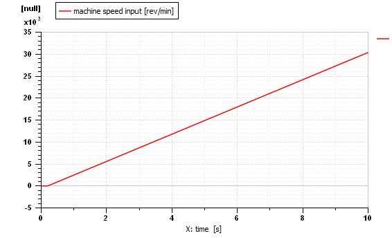
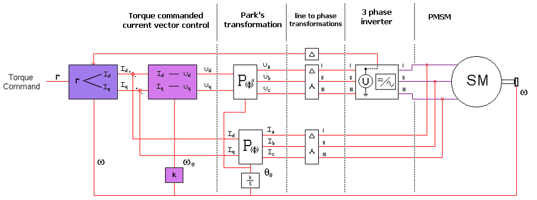
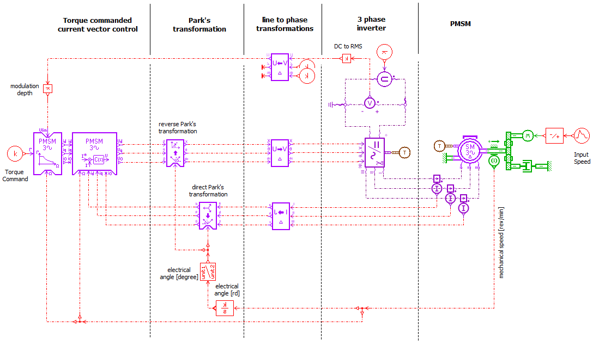
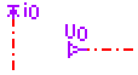
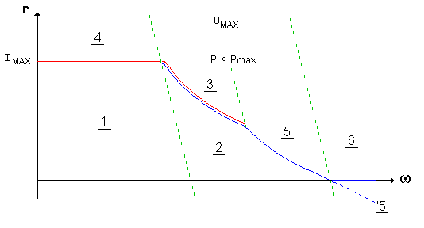
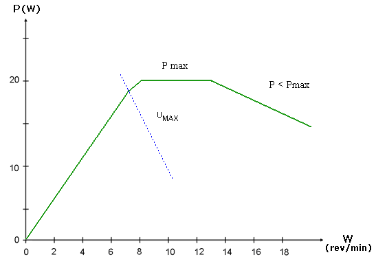
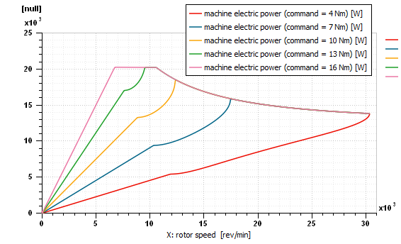
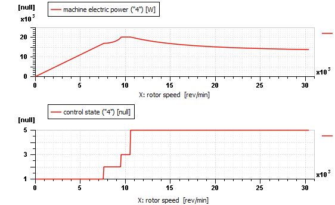
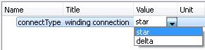
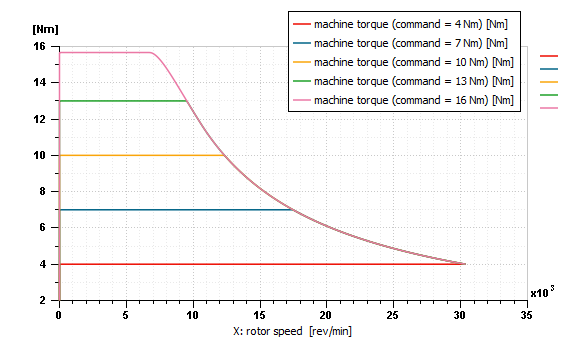

Figure 6: Torque vs. rotor speed (delta)
This demonstration example introduces one of the current vector control elements of the EMD library: EMDPMSMTC01. It is used as part of a control system of a permanent-magnet synchronous motor (PMSM). The system takes a torque command as input while imposing voltage and current limits.
$AME/demo/Libraries/EMD/12_VectorControl.ame
This model represents a
control system of a PMSM with three main parts:
the control, the inverter and the motor.
The control elements and the motor come from the EMD library.
The three-phase inverter comes from the ESC library, it is used to transform the
DC voltage into AC voltage.
The current vector control element (EMDPMSMTC01)
defines the dq currents needed to produce a torque
equals to the torque command.
Some quantities have an impact on the dq currents chosen by the control:
the maximum phase current RMS magnitude (Imax),
the maximum phase voltage RMS magnitude (Umax),
and the rotor relative speed.
The rotor relative speed slope is plotted:

Figure 1: System Input
The block diagram of the model is represented:

Figure 2: Block diagram model
The equivalent Simcenter Amesim sketch is shown below:

Figure 3: Simcenter Amesim sketch
The electric machine is a brushless permanent magnet motor commanded
with field oriented vector control. The
EMDPMSMTC01
control submodel sets the d and q axes current objectives in response to the torque
command reference.
The EMDPMSMCC01
submodel uses two PI controllers to regulate the machine currents to these values.
Direct and reverse abc to dq0 transformations are realized with the
EMDDPT01
and EMDDQ02P01
submodels.
This is necessary since the
machine is fed in the standard abc frame.
Phase-line transformations are applied using the submodels
EMDSDUP01,
EMDSDI01,
EMDSDUSP01.
Finally, commanded voltage values are given to the three-phase inverter
for proper electric motor control.
The sketch contains a third connector for the homopolar element of dq0 transformation.
Although the input value is not used by the control submodel, and the output is constantly set to zero.

Figure 4: Homopolar Component Ports

Figure 5: Torque vs. rotor speed
Imax Constraint.
Limits.
Machine Curve.
Machines are usually characterized by a maximum torque vs. speed curve like the one shown on Figure 5. The figure also shows the control strategy imposed limits, with respect to maximum stator voltage (Umax) and current (Imax) mentioned above. The point where power output decreases is also shown (P<Pmax). The curve shown represents the maximum limits for a given machine, but an infinite number of lesser torque values are contained inside of it. To see some of these values, as well as the maximum limit, we will do a Batch Run.
Figure 6: Torque vs. rotor speed (delta)
After plotting the results we see that different torque commands will give the desired output for a different range of speeds but will always reach a speed were the torque command cannot be respected. For the conditions leading to these limitations, you can consult the EMDPMSMTC01 submodel documentation.

Figure 7: Power output
(Power vs. rotor speed characteristic)
This is another characteristic curve for a PMSM: power output versus rotor speed. It can be observed that, as before, the command strategy imposed limits have an effect on machine behavior. We can observe the Umax limit influence, shown as a border in the previous image, in the power output curve shown in the next image:

Figure 8: Power output
(from simulation)
The curve can be explained by the control states applied on each section:

Figure 9: Power output and control state
(from batch "4")
To control a motor with a star winding connection type, you must change the connecType global parameter from delta to star. This will update the parameters in all three "line to phase transformations" components as well as in the synchronous machine. Also, to be completely equivalent to the previous system, DC voltage supply will be multiplied by \(\sqrt{3}\).

Figure 10: Global parameter modifications
The advantage of using the EMDSDUP01, EMDSDI01 and EMDSDUSP01 submodels is that no changes in the control strategy are required for a different type of winding connection of the PMSM machine.

Figure 11: Torque vs. rotor speed (star)
Finally, it is interesting to note that the ESCAVINV001 average three-phase inverter submodel calculates the effects on the power supply of converter losses, but not their effect on the machine's regulation. Also, because it is an average model, it cannot correctly predict what happens when the safety margin (also known as modulation depth) is not enough to prevent overstepping the maximum RMS phase voltage. For this kind of simulation a more complete inverter and control system is needed. This will be covered in the demo: Permanent magnet synchronous motor vector control (advanced example).